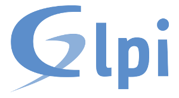
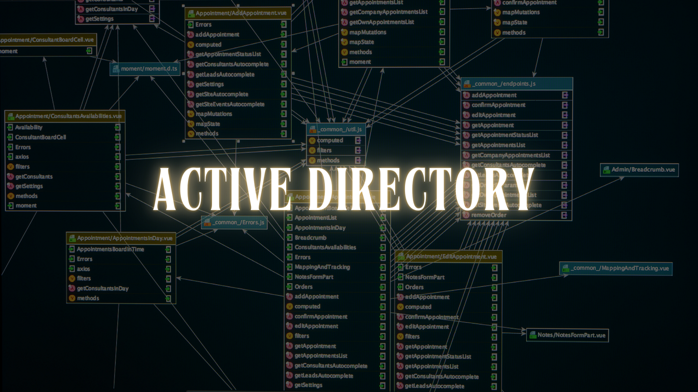
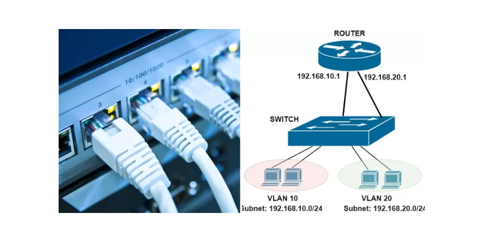
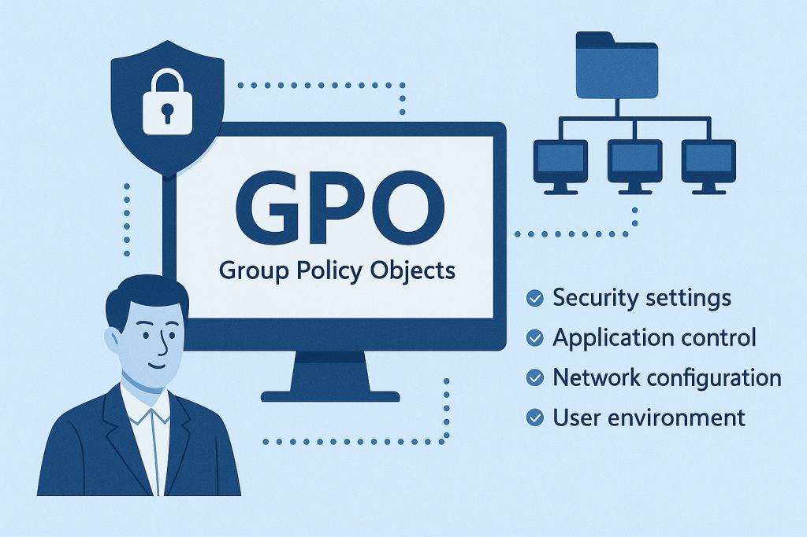
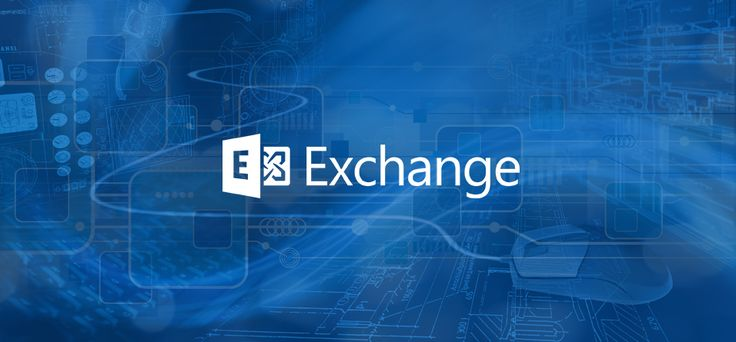

Procédure GLPI
Installation, configuration et utilisation de GLPI pour l'inventaire et la gestion du parc informatique.
Portfolio technique
Procédures techniques, dossier professionnel E5 et projet de fin d'études E6.

Documentation
Guides techniques rédigés en TP — chaque procédure est disponible en PDF.

Installation, configuration et utilisation de GLPI pour l'inventaire et la gestion du parc informatique.

Création d'utilisateurs, groupes, OUs et configuration des stratégies de base dans l'annuaire Active Directory.

Segmentation réseau par VLAN, configuration des ports trunk et routage inter-VLAN entre switches.

Création et déploiement de stratégies de groupe (GPO) pour centraliser la configuration des postes Windows.

Installation des rôles, configuration des domaines acceptés et création des boîtes aux lettres pour la messagerie d'entreprise.
Épreuve Professionnelle • BTS SIO SISR
Synthèse des projets d'infrastructure, de sécurité avancée, de brassage et d'accès distants déployés au sein du laboratoire.
Durant cette période au sein du service informatique, j'ai participé activement à la refonte des infrastructures réseau, à la mise en place de passerelles d'accès distants sécurisées, ainsi qu'au renforcement de la supervision et de la gestion des identités.
Projet scolaire
Projet de fin de formation réalisé au centre de formation — documentation et livrables techniques.

Le projet E6 consiste à concevoir et déployer une solution d'infrastructure répondant à un besoin identifié. Documentation, schémas réseau, procédures et présentation orale devant un jury.
Me contacter pour obtenir le dossier E6